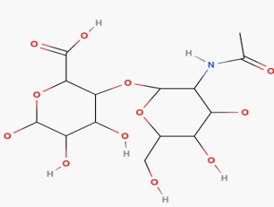
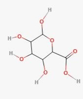
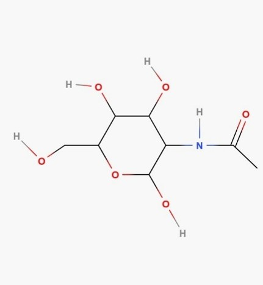
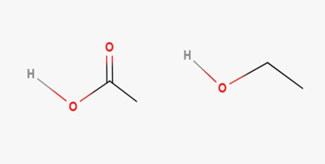
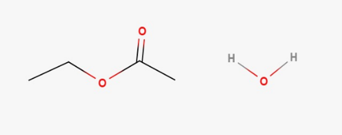
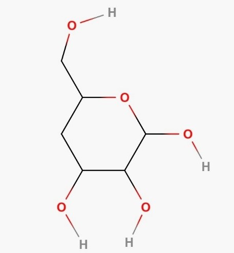
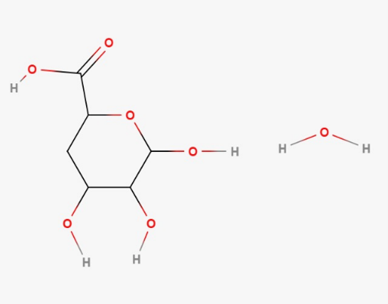
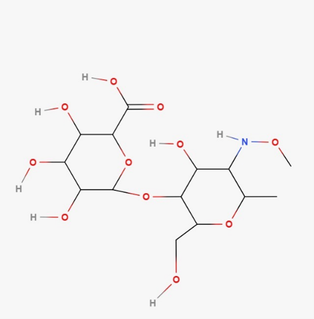
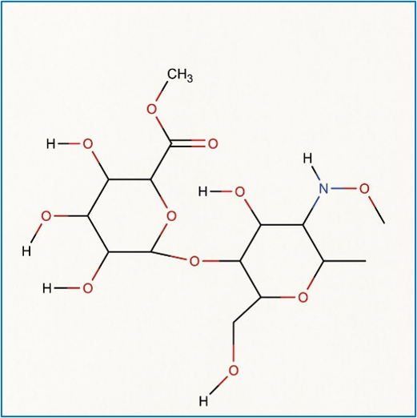

Ácido hialurônico e as três reações que dão forma à matriz da DermaSkin.
Um polissacarídeo formado pela repetição de ácido D-glucurônico (GlcA) e N-acetil-D-glucosamina (GlcNAc), unidos por ligações glicosídicas. É a base da matriz da DermaSkin: hidratação, suporte celular, passagem de nutrientes e liberação gradual de moléculas bioativas.

| Fórmula molecular | (C₁₄H₂₃NO₁₂)ₙ — unidade repetitiva |
|---|---|
| Funções orgânicas | Ácido carboxílico (–COOH), álcool (–OH), amida (–CONH–) e éter (C–O–C) |
| Importância | Forma uma matriz hidratada e biodegradável |
Polimerização por condensação entre as duas unidades, formando a cadeia do ácido hialurônico.

arraste para girar

arraste para girar
Duas unidades menores se conectam por ligações C–O–C, formando uma cadeia polimérica maior.
| Tipo de reação | Polimerização por condensação, com formação de ligações glicosídicas |
|---|---|
| Funções antes | Álcool, ácido carboxílico, amida e grupos hidroxila |
| Funções depois | Éter glicosídico, álcool, ácido carboxílico e amida |
| Importância | Forma a cadeia que retém água e sustenta as células |
O grupo ácido carboxílico do ácido hialurônico reage com o grupo álcool de um agente reticulante.

Ácido carboxílico + álcool do reticulante
Ligação éster + águaUma ligação éster passa a conectar regiões diferentes das cadeias do polímero.
| Tipo de reação | Esterificação |
|---|---|
| Funções antes | Ácido carboxílico e álcool |
| Função depois | Éster |
| Importância | Aumenta resistência, forma rede tridimensional e controla a degradação |
Oxidação de um álcool primário na cadeia do ácido hialurônico, formando um grupo ácido carboxílico.

Álcool primário (C6)
Ácido D-glucurônico + águaO grupo –CH₂OH é convertido em –COOH pela ação de um agente oxidante.
| Tipo de reação | Oxidação |
|---|---|
| Função antes | Álcool |
| Função depois | Ácido carboxílico |
| Importância | Aumenta a carga negativa da molécula, favorecendo hidratação |
Na esterificação, o grupo ácido carboxílico do ácido hialurônico reage com o grupo álcool do reticulante, formando o grupo éster e água.

Ácido hialurônico (antes)
Após esterificação (reticulado)| Grupo alterado | Ácido carboxílico –C(=O)OH e álcool –OH |
|---|---|
| Grupo no produto | Éster: –C(=O)O–R′ |
| Diferença estrutural | Antes, os grupos estão separados; depois, uma ligação éster conecta cadeias diferentes |
| Consequência | A matriz fica mais resistente, menos solúvel e com degradação mais controlada |
A escolha é usar ácido hialurônico parcialmente reticulado. Sem reticulação, a matriz se dispersaria rápido e não sustentaria as células; com reticulação excessiva, ficaria rígida e dificultaria a passagem de nutrientes. A reticulação parcial equilibra hidratação, resistência, porosidade e degradação gradual.
PERGUNTA ORIENTADORA
Como as variações de pH e temperatura no meio de reação afetam o rendimento da síntese/transformação do nosso produto e a integridade dos grupos funcionais presentes na molécula?
O aumento de temperatura acelera a reação, mas calor excessivo degrada a molécula. Variações de pH alteram os grupos funcionais — meios muito ácidos ou básicos quebram ligações indesejadamente. Por isso o processo precisa de uma faixa controlada de temperatura e pH, garantindo produção máxima sem estragar o produto final.